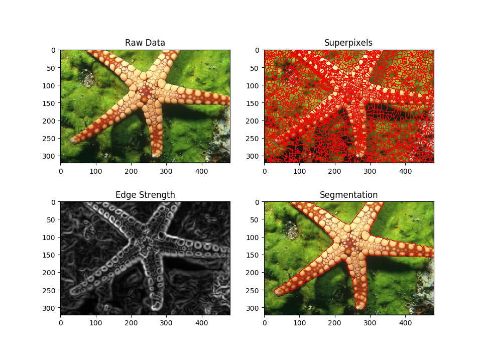

RGB Agglomerative Clustering¶
Segment an image with agglomerative clustering. We start from a region adjacency graph.
from __future__ import print_function
import numpy
import vigra
import urllib
import os.path
import pylab
import skimage.segmentation
# nifty
import nifty.graph.rag # RAG
import nifty.graph.agglo # Agglomerative clustering
# download and read image
url = "https://www2.eecs.berkeley.edu/Research/Projects/CS/vision/bsds/BSDS300/html/images/plain/normal/color/12003.jpg"
fname = '12003.jpg'
if not os.path.isfile(fname):
urllib.request.urlretrieve(url, fname)
img = vigra.impex.readImage(fname)
img = numpy.swapaxes(img, 0, 1)
# edge indicator
edgeStrength = vigra.filters.gaussianGradientMagnitude(img,2.5).squeeze()
# watershed superpixels
overseg, neg = vigra.analysis.watersheds(edgeStrength)
overseg -= 1
# make the Region adjacency graph (RAG)
rag = nifty.graph.rag.gridRag(overseg)
# accumulate the mean edge value
# along the superpixel boundaries
# length of each boundary and node sizes
edge_features, node_features = nifty.graph.rag.accumulateMeanAndLength(
rag, edgeStrength, [512,512],0)
meanEdgeStrength = edge_features[:,0]
edgeSizes = edge_features[:,1]
nodeSizes = node_features[:,1]
# use vigra to accumulate the mean
# RGB values for each superpixel
nodeFeatures = vigra.analysis.extractRegionFeatures(image=img, labels=overseg,features='Mean')['Mean']
clusterPolicy = nifty.graph.agglo.nodeAndEdgeWeightedClusterPolicy(
graph=rag, edgeIndicators=meanEdgeStrength,
nodeFeatures=nodeFeatures,
edgeSizes=edgeSizes,
nodeSizes=nodeSizes,
beta=0.15, numberOfNodesStop=4,
sizeRegularizer=0.3)
# run agglomerative clustering
agglomerativeClustering = nifty.graph.agglo.agglomerativeClustering(clusterPolicy)
agglomerativeClustering.run()
nodeSeg = agglomerativeClustering.result()
# convert graph segmentation
# to pixel segmentation
seg = nifty.graph.rag.projectScalarNodeDataToPixels(rag, nodeSeg)
# plot the results
# increase default figure size
a,b = pylab.rcParams['figure.figsize']
pylab.rcParams['figure.figsize'] = 1.5*a, 1.5*b
f = pylab.figure()
f.add_subplot(2, 2, 1)
pylab.imshow(img/255, cmap='gray')
pylab.title('Raw Data')
f.add_subplot(2, 2, 2)
b_img = skimage.segmentation.mark_boundaries(img/255,
overseg.astype('uint32'), mode='inner', color=(1,0,0))
pylab.imshow(b_img, cmap='gray')
pylab.title('Superpixels')
f.add_subplot(2, 2, 3)
pylab.imshow(edgeStrength, cmap='gray')
pylab.title('Edge Strength')
f.add_subplot(2, 2, 4)
b_img = skimage.segmentation.mark_boundaries(img/255,
seg.astype('uint32'), mode='inner', color=(1,0,0))
pylab.imshow(b_img)
pylab.title('Segmentation')
pylab.show()
Total running time of the script: ( 0 minutes 0.505 seconds)